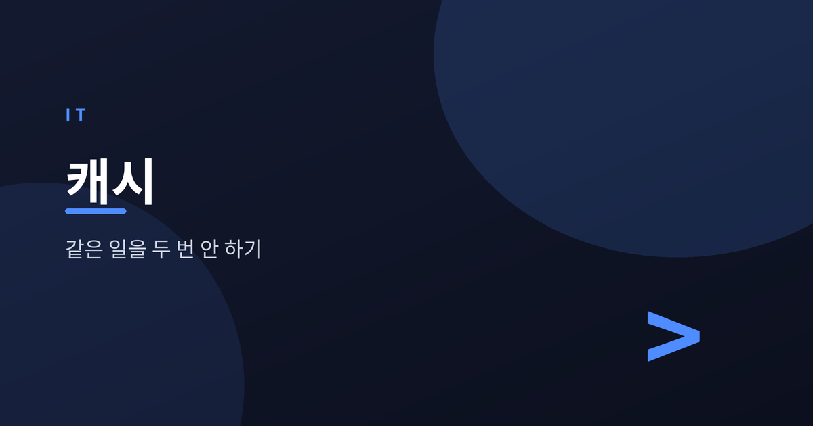
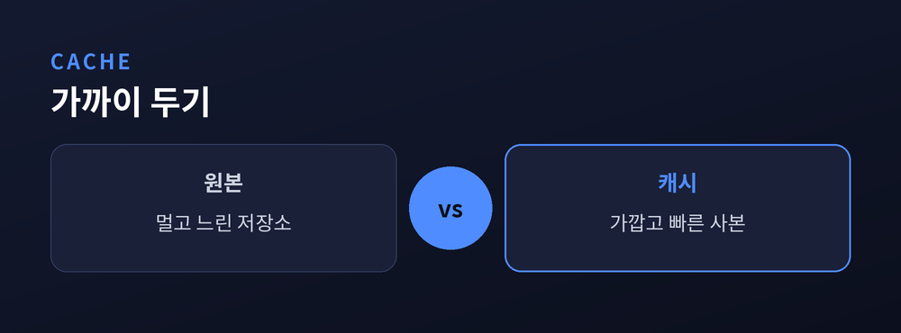
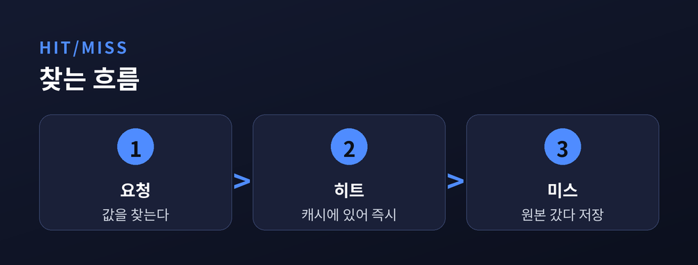
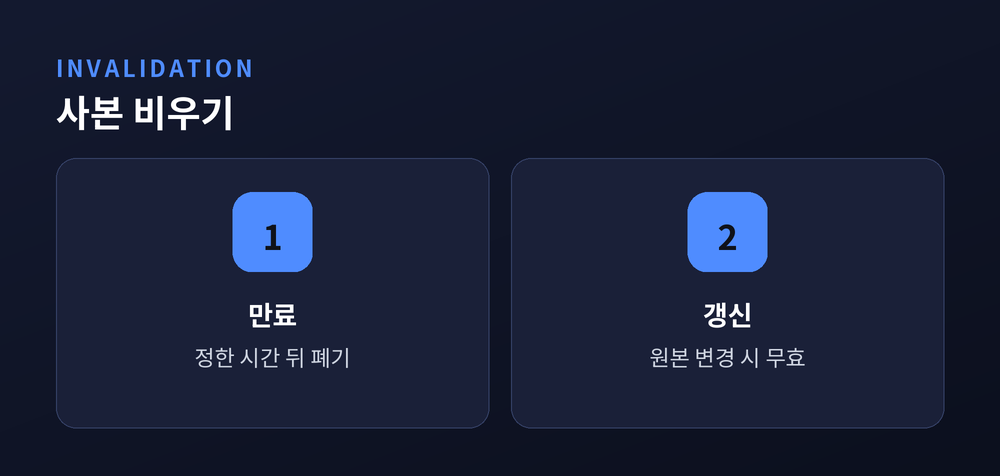
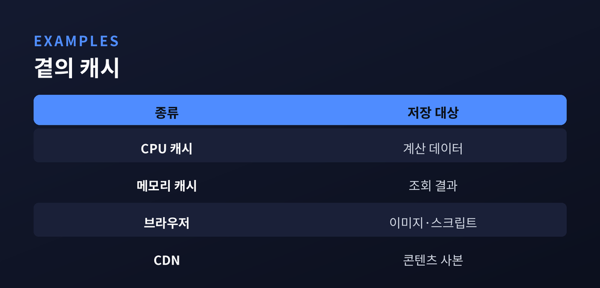

왜 컴퓨터는 같은 일을 두 번 하지 않을까

이번 글에서는 컴퓨터를 빠르게 만드는 숨은 일꾼, 캐시(Cache)를 정리해 보겠습니다.
같은 페이지를 두 번째 열 때 훨씬 빨리 뜬 경험, 다들 있으실 겁니다. 컴퓨터가 요령을 부리는 것처럼 보이지만, 사실은 아주 단순한 원리 하나가 뒤에서 일하고 있습니다.
자주 쓰는 것을 가까이 두는 습관. 캐시는 바로 그 습관을 기계로 옮긴 것입니다.
캐시는 자주 쓰는 데이터를 가까운 곳에 미리 저장해 두는 공간입니다. 멀리서 매번 가져오지 않고, 손 닿는 자리에 사본을 둡니다.
책상을 떠올려 보시면 됩니다. 매일 보는 책을 서랍 깊이 넣어 두면 매번 꺼내기가 번거롭습니다. 그래서 자주 보는 책은 책상 위에 올려 둡니다.
캐시도 똑같습니다. 원본은 느리고 먼 곳(디스크, 원격 서버)에 있어도, 자주 쓰는 값은 빠르고 가까운 곳에 복사해 둡니다.
덕분에 컴퓨터는 같은 일을 두 번 반복하지 않습니다. 한 번 구한 답을 기억해 두고 다시 씁니다.

찾는 값이 캐시에 있으면 캐시 히트(hit)입니다. 곧바로 꺼내 쓰니 아주 빠릅니다.
없으면 캐시 미스(miss)입니다. 이때는 어쩔 수 없이 느린 원본까지 다녀와야 합니다. 대신 가져온 김에 캐시에 넣어 두어, 다음번엔 히트가 되도록 합니다.
그래서 캐시의 성능은 히트율로 가늠합니다. 열 번 중 아홉 번을 캐시에서 해결하면, 그만큼 전체가 빨라집니다.
관건은 무엇을 남기고 무엇을 버릴지입니다. 공간은 한정돼 있으니, 오래 안 쓴 값부터 밀어내는 식으로 자리를 관리합니다.

캐시에는 함정이 하나 있습니다. 원본이 바뀌었는데 사본이 옛날 값 그대로라면, 우리는 틀린 값을 빠르게 받게 됩니다.
그래서 캐시는 사본을 언제 버릴지 정해야 합니다. 흔한 방법은 두 가지입니다.
만료(expiration)는 "이 값은 5분만 유효" 하는 식으로 시간을 정해 두는 방식입니다. 시간이 지나면 자동으로 버리고 새로 가져옵니다.
갱신(invalidation)은 원본이 바뀌는 순간 해당 사본을 곧바로 무효로 만드는 방식입니다. 정확하지만 관리가 까다롭습니다.
"컴퓨터 과학에서 어려운 것은 두 가지, 캐시 무효화와 이름 짓기다."
농담처럼 도는 말이지만, 빠름과 정확함 사이의 줄타기가 그만큼 어렵다는 뜻입니다.

캐시는 특별한 기술이 아니라, 컴퓨터 곳곳에 겹겹이 숨어 있습니다.
CPU 캐시는 자주 쓰는 계산 데이터를 프로세서 바로 옆에 둡니다. 메모리 캐시는 데이터베이스 조회 결과 같은 값을 메모리에 담아 반복 질의를 줄입니다.
브라우저 캐시는 한 번 받은 이미지와 스크립트를 저장해, 다시 방문할 때 내려받지 않게 합니다. CDN은 전 세계에 흩어진 서버에 콘텐츠 사본을 두어, 사용자와 가장 가까운 곳에서 전달합니다.
층은 다르지만 원리는 하나입니다. 자주 쓰는 것을 가까이 두어, 같은 일을 두 번 하지 않는 것입니다.

정리하면 이렇습니다. 캐시는 자주 쓰는 데이터를 가까이 저장해 속도를 얻는 기술입니다. 찾으면 히트, 없으면 미스이고, 히트율이 성능을 좌우합니다. 다만 원본이 바뀌면 만료나 갱신으로 사본을 비워 줘야 정확함을 잃지 않습니다.
빠른 화면 뒤에는 이렇게 조용히 답을 기억해 두는 장치들이 있습니다. 다음에 두 번째 클릭이 유난히 빠르게 느껴진다면, 어딘가의 캐시가 일을 대신 해 준 덕분이라고 생각하셔도 좋겠습니다.